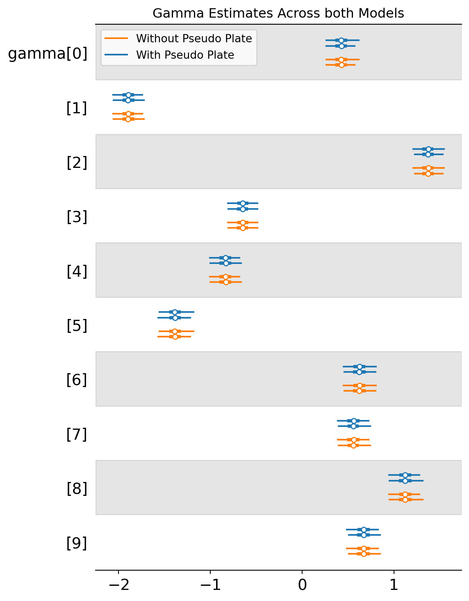

The goal of this post is to figure out how to use numpyro internals to auto-label variable dimensions for ArviZ. PyMC is heavily integrated with ArviZ and their dimension labelling is fantastic - I want it to be just as easy with numpyro.
This isn’t going to be a very fun blog post, it’s meant to follow my thought process as I work through this problem. Maybe that’s helpful for some people? But mostly it will be a good reference for myself in the future.
Part 1: Setting a baseline
What are coords and dims?
I’m assuming readers are familiar with this, but here is a quick refresher. ArviZ takes in a bayesian posterior and organizes it as an xarray dataset - picture pandas but for tensors. ArviZ expects coords and dims to map parameter dimensions to names and categories as show below
The coords map the category names to a positional index, where A corresponds to index 0, B corresponds to index 1, and so on.
Our dims tell us that our gamma parameter is indexed by category. This would estimate a gamma parameter for each category, i.e. gamma[0] is the gamma estimate for category A. beta in this case has a separate estimate for each category {A, B, C, D, E} and for each feature {X1, X2, X3}.
This is helpful for so many reasons - plots are easier to read with the category names displayed for each parameter, and you can do operations using the dimension names
The code snippet below returns the average estimate for beta when the category=A, which is extremely easy to read
What we really want is for those dimensions labeled “{site}_dim_0” to be labelled by their plate names, so we need to see if there’s a way to automatically grab the plate metadata. Luckily there’s an inspect module in numpyro that seems like it might cover some of this.
Perfect! Next lets make sure this works when a site is within multiple plates - I’m concerned that my approach for reversing the plate mapping wont get the order right when a site is within multiple plates
Part 2: Adding an edge case with multiple plates per site
Does our approach preserve the dimension order?
We’ll have to simulate some new data where \(\beta\) has group-specific effects. I’m going to make each feature have a group specific effect so that I can test if my solutions will work with nested plates.
This is tricky. Beta should have dims (chain, draw, features, Z), but how do we know the plate_sample dictionary will return the correct order? What happens if we reverse the plate order?
This is bad news - looking at the plate_samples’s above, we see the same result despite the plates having different dims. This approach isn’t going to maintain the plate order, so we’ll end up mislabelling dims in our previous approach.
Finding better plate metadata
I took a closer look at the get_model_relations function and it looks like this is where they’re pulling plate information
def get_model_relations(model, model_args=None, model_kwargs=None): ... sample_plates = { name: [frame.name for frame in site["cond_indep_stack"]]for name, site in trace.items()if site["type"] in ["sample", "deterministic"] } ...
I’m going to try and see what other information is in there by copying their approach of pulling a model trace. Some helper functions are hidden in the code-fold below
Code
from functools import partialfrom numpyro import handlersfrom numpyro.infer.initialization import init_to_samplefrom numpyro.ops.pytree import PytreeTracemodel_kwargs =dict(X=X, Z=z, y=y)def _get_dist_name(fn):ifisinstance( fn, (dist.Independent, dist.ExpandedDistribution, dist.MaskedDistribution) ):return _get_dist_name(fn.base_dist)returntype(fn).__name__def get_trace(model, model_kwargs):# We use `init_to_sample` to get around ImproperUniform distribution,# which does not have `sample` method. subs_model = handlers.substitute( handlers.seed(model, 0), substitute_fn=init_to_sample, ) trace = handlers.trace(subs_model).get_trace(**model_kwargs)# Work around an issue where jax.eval_shape does not work# for distribution output (e.g. the function `lambda: dist.Normal(0, 1)`)# Here we will remove `fn` and store its name in the trace.for name, site in trace.items():if site["type"] =="sample": site["fn_name"] = _get_dist_name(site.pop("fn"))elif site["type"] =="deterministic": site["fn_name"] ="Deterministic"return PytreeTrace(trace)
We should be able to make a working dims mapping from this for each site in our model.
It turns out that they already do this for us on L337
sample_plates = { name: [frame.name for frame in site["cond_indep_stack"]]for name, site in trace.items()if site["type"] in ["sample", "deterministic"]}
The working implementation is below (but could probably be cleaned up)
def get_site_dims(model: Callable, **kwargs):def _get_dist_name(fn):ifisinstance( fn, (dist.Independent, dist.ExpandedDistribution, dist.MaskedDistribution) ):return _get_dist_name(fn.base_dist)returntype(fn).__name__def get_trace():# We use `init_to_sample` to get around ImproperUniform distribution,# which does not have `sample` method. subs_model = handlers.substitute( handlers.seed(model, 0), substitute_fn=init_to_sample, ) trace = handlers.trace(subs_model).get_trace(**kwargs)# Work around an issue where jax.eval_shape does not work# for distribution output (e.g. the function `lambda: dist.Normal(0, 1)`)# Here we will remove `fn` and store its name in the trace.for name, site in trace.items():if site["type"] =="sample": site["fn_name"] = _get_dist_name(site.pop("fn"))elif site["type"] =="deterministic": site["fn_name"] ="Deterministic"return PytreeTrace(trace)# We use eval_shape to avoid any array computation. trace = jax.eval_shape(get_trace).trace sample_plates = { name: [frame.name for frame in site["cond_indep_stack"]]for name, site in trace.items()if site["type"] in ["sample", "deterministic"] }return {k:v for k,v in sample_plates.items() iflen(v) >0}idata = az.from_numpyro( mcmc, dims=get_site_dims(model2, **model_kwargs), coords=coords)print_site_dims(idata)
Part 3: What happens with the ZeroSumNormal distribution
A quick tangent on tensor shapes and why the ZeroSumNormal is different
I recently ported the ZeroSumNormal distribution from PyMC to numpyro and it follows some different conventions than the typical distribution.
To understand it, you probably need to have some background on tensor shapes - theres a great blog from Eric Ma here.
Typically in numpyro, when we put a sample site within a plate, the batch shape is determined by the plates. The batch shape is independent, but not identically distributed across dimensions. For instance in our previous alpha parameter we had 10 groups we stratified it by - we’re getting independent draws for alpha for each group.
The ZeroSumNormal instead works by using an event shape instead of a batch shape. Event shapes often have some dependency across dimensions, and in this case the zero sum constraint creates some dependency across the dimensions.
While we typically might define a categorical parameter like this in numpyro:
with numpyro.plate("groups", n_groups): gamma = numpyro.sample("gamma", dist.Normal(0,1))
with the ZeroSumNormal we define categorical parameters like this:
We need to figure out how to have dims mapped for the ZeroSumNormal despite it not using a plate. The first test will be seeing what happens when we do nest it under a plate
It looks like this unfortunately doesnt work, it creates a batch_shape=10, event_shape=10 when we only want the event_shape in this case.
A custom primitive for labelling event dims
This is going to be a problem that I’m not sure is solve-able with the current tools. But what if we could create a primitive that could save dim names for us in the trace without actually doing anything? ie
The main idea is that we could store information thats retrieavable in the trace, mimicking plates but without actually expanding the parameter shape like a plate would
Below is an implementation and a quick test model to make sure it has the correct shape saved
from numpyro.primitives import Messenger, Message, CondIndepStackFrameclass pseudo_plate(numpyro.plate):def__init__(self, name: str, size: int, subsample_size: Optional[int] =None, dim: Optional[int] =None, ) ->None:self.name = nameself.size = sizeif dim isnotNoneand dim >=0:raiseValueError("dim arg must be negative.")self.dim, self._indices =self._subsample(self.name, self.size, subsample_size, dim )self.subsample_size =self._indices.shape[0]# We'll try only adding our pseudoplate to the CondIndepStack without doing anything elsedef process_message(self, msg: Message) ->None: cond_indep_stack: list[CondIndepStackFrame] = msg["cond_indep_stack"] frame = CondIndepStackFrame(self.name, self.dim, self.subsample_size) cond_indep_stack.append(frame)def test_model(): n_groups =10with pseudo_plate("groups", 0): gamma = numpyro.sample("gamma", dist.ZeroSumNormal(1, event_shape=(n_groups,)))mcmc = run_inference(test_model, random.PRNGKey(0), num_chains=1)mcmc.get_samples()['gamma'].shape
(50, 10)
As we can see above, we got the correct shape for gamma. Lets see if this works in a model
This seemed to work! But are there any unintended consequences of having another “plate” in the CondIndepStack? Lets fit a second version of the model without the pseudo_plate and see if they return similar results
We’ll check that parameter estimation for the site is the same
import matplotlib.pyplot as pltaz.plot_forest( [mcmc_zsn_pseudoplate, mcmc_zsn], model_names=['With Pseudo Plate', 'Without Pseudo Plate'], var_names=['gamma'])plt.title("Gamma Estimates Across both Models")plt.show()

And more importantly, we’ll make sure this doesnt impact the final likelihood estimate
idata_zsn_pseudoplate = az.from_numpyro(mcmc_zsn_pseudoplate)idata_zsn = az.from_numpyro(mcmc_zsn)delta = idata_zsn.log_likelihood['y'] - idata_zsn_pseudoplate.log_likelihood['y']print("Difference in Log Likelihood with and without the pseudoplate:", float(delta.mean()))
Difference in Log Likelihood with and without the pseudoplate: 0.0
I’m a bit shocked to say that this works so far.
Another edge case: both batch and event dims
Next we need to make sure it works if we also have a batch dimension
Sadly this didnt quite work - it seems like the dim-handling isn’t working as we want it to because the batch shape is (3,1) instead of just (3,) - this is because of the way we aranged the plates, we put the batches in the position of dim=-2. Lets look at the trace
Taking a step back, it’s clear I thought about this wrong - the Conditional Indepdence Stack is for batch dimensions that are conditionally independent, and by putting our pseudoplate in there, we’re messing with how the batch dimensions are arranged.
It’s also hard to follow exactly how the conditional indepence stack is used throughout the code, and if that will have any unexpected consequences.
I’m going to try something new - lets make a new primitive that creates a dep_stack and we’ll put the pseudo plates in there and see if it fixes things. This is going to get even more ugly so I’m hiding the implementation below in a code fold
Code
from typing import Tuplefrom collections import namedtupleimport numpyrofrom numpyro.primitives import Messenger, Message, apply_stack, _subsample_fnfrom numpyro.util import find_stack_levelDepStackFrame = namedtuple("DepStackFrame", ["name", "dim", "size"])class pseudo_plate(numpyro.plate):def__init__(self, name: str, size: int, subsample_size: Optional[int] =None, dim: Optional[int] =None, ) ->None:self.name = nameself.size = sizeif dim isnotNoneand dim >=0:raiseValueError("dim arg must be negative.")self.dim, self._indices =self._subsample(self.name, self.size, subsample_size, dim )self.subsample_size =self._indices.shape[0]# We'll try only adding our pseudoplate to the CondIndepStack without doing anything elsedef process_message(self, msg: Message) ->None:if msg["type"] notin ("param", "sample", "plate", "deterministic"):if msg["type"] =="control_flow":raiseNotImplementedError("Cannot use control flow primitive under a `plate` primitive."" Please move those `plate` statements into the control flow"" body function. See `scan` documentation for more information." )returnif ("block_plates"in msg.get("infer", {})andself.name in msg["infer"]["block_plates"] ):return frame = DepStackFrame(self.name, self.dim, self.subsample_size) msg['dep_stack'] = msg.get('dep_stack', []) + [frame]def _get_event_shape(self, dep_stack: List[DepStackFrame]) -> Tuple[int]: n_dims =max(-f.dim for f in dep_stack) event_shape = [1] * n_dimsfor f in dep_stack: event_shape[f.dim] = f.sizereturntuple(event_shape)# We need to make sure dims get aranged properly when there are multiple plates@staticmethoddef _subsample(name, size, subsample_size, dim): msg = {"type": "plate","fn": _subsample_fn,"name": name,"args": (size, subsample_size),"kwargs": {"rng_key": None},"value": (Noneif (subsample_size isnotNoneand size != subsample_size)else jnp.arange(size) ),"scale": 1.0,"cond_indep_stack": [],"dep_stack": [], } apply_stack(msg) subsample = msg["value"] subsample_size = msg["args"][1]if subsample_size isnotNoneand subsample_size != subsample.shape[0]: warnings.warn("subsample_size does not match len(subsample), {} vs {}.".format( subsample_size, len(subsample) )+" Did you accidentally use different subsample_size in the model and guide?", stacklevel=find_stack_level(), ) dep_stack = msg["dep_stack"] occupied_dims = {f.dim for f in dep_stack}if dim isNone: new_dim =-1while new_dim in occupied_dims: new_dim -=1 dim = new_dimelse:assert dim notin occupied_dimsreturn dim, subsample
Note that I’m copying alot of the code above directly from the plateprimitive.
Finally, lets bring this altogether. In the code-fold below is all of the needed functions in one place, but they really need to be cleaned up.
Code
from typing import Tuple, Any, Optional, List, Dict, Callablefrom collections import namedtuplefrom numpy.typing import ArrayLikefrom functools import partialimport numpy as npimport numpyrofrom numpyro import distributions as distfrom numpyro import handlersfrom numpyro.primitives import Messenger, apply_stack, _subsample_fnfrom numpyro.util import find_stack_levelfrom numpyro.infer import NUTS, MCMCfrom numpyro.infer.initialization import init_to_samplefrom numpyro.ops.pytree import PytreeTraceimport jaxfrom jax import randomimport jax.numpy as jnpfrom jaxtyping import Float, Array, Intimport arviz as az# ######################## Code for pseudo_plate# #######################Message =dict[str, Any]DepStackFrame = namedtuple("DepStackFrame", ["name", "dim", "size"])class pseudo_plate(numpyro.plate):def__init__(self, name: str, size: int, subsample_size: Optional[int] =None, dim: Optional[int] =None, ) ->None:self.name = nameself.size = sizeif dim isnotNoneand dim >=0:raiseValueError("dim arg must be negative.")self.dim, self._indices =self._subsample(self.name, self.size, subsample_size, dim )self.subsample_size =self._indices.shape[0]# We'll try only adding our pseudoplate to the CondIndepStack without doing anything elsedef process_message(self, msg: Message) ->None:if msg["type"] notin ("param", "sample", "plate", "deterministic"):if msg["type"] =="control_flow":raiseNotImplementedError("Cannot use control flow primitive under a `plate` primitive."" Please move those `plate` statements into the control flow"" body function. See `scan` documentation for more information." )returnif ("block_plates"in msg.get("infer", {})andself.name in msg["infer"]["block_plates"] ):return frame = DepStackFrame(self.name, self.dim, self.subsample_size) msg['dep_stack'] = msg.get('dep_stack', []) + [frame]if msg["type"] =="deterministic":returndef _get_event_shape(self, dep_stack: List[DepStackFrame]) -> Tuple[int]: n_dims =max(-f.dim for f in dep_stack) event_shape = [1] * n_dimsfor f in dep_stack: event_shape[f.dim] = f.sizereturntuple(event_shape)# We need to make sure dims get aranged properly when there are multiple plates@staticmethoddef _subsample(name, size, subsample_size, dim): msg = {"type": "plate","fn": _subsample_fn,"name": name,"args": (size, subsample_size),"kwargs": {"rng_key": None},"value": (Noneif (subsample_size isnotNoneand size != subsample_size)else jnp.arange(size) ),"scale": 1.0,"cond_indep_stack": [],"dep_stack": [], } apply_stack(msg) subsample = msg["value"] subsample_size = msg["args"][1]if subsample_size isnotNoneand subsample_size != subsample.shape[0]: warnings.warn("subsample_size does not match len(subsample), {} vs {}.".format( subsample_size, len(subsample) )+" Did you accidentally use different subsample_size in the model and guide?", stacklevel=find_stack_level(), ) dep_stack = msg["dep_stack"] occupied_dims = {f.dim for f in dep_stack}if dim isNone: new_dim =-1while new_dim in occupied_dims: new_dim -=1 dim = new_dimelse:assert dim notin occupied_dimsreturn dim, subsample# ######################## Code for pulling dims# #######################def get_site_dims(model: Callable, **kwargs):def _get_dist_name(fn):ifisinstance( fn, (dist.Independent, dist.ExpandedDistribution, dist.MaskedDistribution) ):return _get_dist_name(fn.base_dist)returntype(fn).__name__def get_trace():# We use `init_to_sample` to get around ImproperUniform distribution,# which does not have `sample` method. subs_model = handlers.substitute( handlers.seed(model, 0), substitute_fn=init_to_sample, ) trace = handlers.trace(subs_model).get_trace(**kwargs)# Work around an issue where jax.eval_shape does not work# for distribution output (e.g. the function `lambda: dist.Normal(0, 1)`)# Here we will remove `fn` and store its name in the trace.for name, site in trace.items():if site["type"] =="sample": site["fn_name"] = _get_dist_name(site.pop("fn"))elif site["type"] =="deterministic": site["fn_name"] ="Deterministic"return PytreeTrace(trace)# We use eval_shape to avoid any array computation. trace = jax.eval_shape(get_trace).trace sample_plates = { name: [frame.name for frame in site["cond_indep_stack"] + site.get("dep_stack", [])]for name, site in trace.items()if site["type"] in ["sample", "deterministic"] }return {k:v for k,v in sample_plates.items() iflen(v) >0}# helper functiondef print_site_dims(idata, vars= ['alpha', 'beta', 'mu']):for var invars:print(f"{var}:", idata.posterior[var].dims )
And the simulation code is underneath the following code-fold
This was alot more difficult than I thought, and there are no guarantees this is a stable implementation since I’m working with very low level code, but I’m hoping this is a solid implementation to get cleaner model output from numpyro models. I’d likely want to reorganize all of this code and run more tests against it when I end up using it in my future projects, and I’d be curious if the numpyro devs had any easier ideas for how to pull this off.
Some things that still need to be explored are:
Will this still work when there’s scoping with sub-models? Or integration with other libraries like flax?
What changes need to be made to get this approach extended to SVI?